WACV 2027 · DIFFUSION TRANSFER / MEDICAL IMAGE GENERATION
从自然图像到医学扫描：扩散模型用于医学图像生成的可迁移性
From Natural Images to Medical Scans: Transferability of Diffusion Models for Medical Image Generation
医学扩散模型几乎都把去噪器从零训练。「从 ImageNet 初始化」在判别式医学影像里是常规操作，但在生成式建模里到底有没有用、有多大用、迁移的又是什么，一直缺少系统评估。这篇论文固定去噪器这一变量，在潜空间与像素空间两种范式、131M–952M 三档规模、两个放射学数据集上回答四个问题：迁移是否有效、迁移的是什么、自然图像与医学图像在表示上有多接近、以及收益能不能用医学预训练替代。
- 原文
- arXiv:2611.05192v1（2026-11-03 提交，21 页含附录）
- 会议
- WACV 2027
- 规模
- 正文 7 节 + 附录 4 节 · 15 图 · 13 表 · 74 文献 · 1 个未编号展示公式
本页是 arXiv:2611.05192v1（2026-11-03）的中英文全文对照翻译，公式、表格数字与图注均对照 arXiv LaTeX 源码核对；该文只有 v1，投稿注释为 WACV 2027。图 1、3、6 在源码中是 pgfplots 矢量图，本页从 arXiv PDF 渲染裁切；其余为作者提供的原图。图只翻译文字，不重绘曲线与样本。所有额外讲解均标为「译者注」。
原文：arXiv 摘要 ↗ · 原文 PDF ↗ · 官方代码 ↗ · 返回论文条目 →
读之前，先把三个词分清
这一段是译者注，不是原文。论文所有结论都建立在「哪种去噪器、在什么空间里初始化」上。
- 像素扩散 vs 潜扩散：像素扩散把去噪器直接作用在含噪像素 ；潜扩散先用分词器把图像压成潜变量 ，再去噪 。前者的全部先验都在去噪器里，后者有相当一部分先验被分词器「预先提供」——这正是本文解释两种范式迁移幅度差异的关键。
- IN 初始化 vs 从零：「IN」指加载在 ImageNet 上训好的同一架构去噪器权重再微调；「scratch」是随机初始化从头训练。论文还加入「统计匹配（ST）」：从匹配 IN 权重逐张量均值方差的高斯里重采样，用来看收益是否只来自权重分布。
- gFID / rFID：gFID 是生成样本与真实图像的 FID；rFID 是分词器重建图像的 FID，用来衡量分词器本身的上限。表 1 里两者分列，不要把 gFID 的差距全算到去噪器头上。
术语速查（译者注）
- 去噪器（denoiser）
- 近似「从加噪数据回到干净数据」这一步的网络，本文指 LDiT / JiT / V-Co 主体。
- 分词器（tokeniser）
- 把图像压到潜空间的自编码器，本文是 SDVAE、VAVAE、MedVAE。
- RadIN
- RadImageNet，2D 放射学数据集，覆盖 CT 与 MR 五个部位，本文取 530,534 张切片。
- BraTS
- 2024 版治疗后成人胶质瘤队列，四个共配准 MRI 模态，本文展平成 2D 切片使用。
- LDS / LDS_C
- 局部结构相似度指标：邻近 patch 表示相似、远距 patch 表示不同，数值越高表示空间组织越好。LDS_C 是本文为中心化并去掉首末块后的版本。
- Dens. / Cov.
- 密度与覆盖度，分别度量保真度与多样性，比 precision/recall 更稳健。
摘要
English original
从自然图像进行迁移学习在监督式医学图像分析中已是标准做法，在自监督医学图像分析中也越来越常见，但在生成式建模、尤其是扩散去噪器中的作用仍未被充分探索。医学扩散模型通常从零训练去噪器，没有对自然图像迁移的系统性评估。我们在潜空间与像素两种范式、模型规模（131M–952M）以及两个放射学数据集（RadImageNet、BraTS）上分析这一问题，并追问迁移的哪些方面支撑生成。我们发现：i) 自然图像初始化稳定改善生成，像素空间相对 gFID 提升 21–34%，潜空间为 14%，后者中分词器已提供大部分先验；gFID 增益在病理分类与放射组学特征 FD 上同步体现，二者都是临床保真度的代理。ii) 收益反映空间结构而非语义：语义探针不能预测生成质量，而为去噪器内部表示改造的空间结构指标在 上追踪 gFID，说明空间组织是预训练得以体现的一条通道。iii) 混合域去噪器训练显示，自然图像与医学图像在直到后段块之前共享相似的逐层表示，把自然图像混入医学训练可提升保真度。iv) 迁移收益与自然图像初始化绑定，优于域内医学预训练与若干重初始化方案。总体而言，在我们的设定下自然图像去噪器向医学去噪器正向迁移。代码见 CAIROLab-Bern/rad-dit。
English original
1 引言
English original
教学绘图教材把图像创作分解为少量基本元素，例如边缘、轮廓、比例与明暗，复杂场景可由这些元素组合而成。视觉神经科学中有相近的原理：早期视觉皮层的神经元对朝向边缘这类低级特征有响应，而这类特征存在于任何视觉输入中，无论自然照片还是医学扫描。
English original
领域专长建立在这一共享感知基础之上。放射科医生通过大量接触医学图像获得领域特异的模式识别能力，但这种优势一般不会延伸到非放射学的视觉搜索任务。这提示应区分可广泛复用的视觉基本元素与习得的领域专长。
English original
计算机视觉中的迁移学习由类似现象驱动。从 ImageNet（IN）初始化是监督式医学影像的标准做法。早期卷积模型研究发现迁移收益有限，主要体现为更快收敛与低级（通用）特征复用。Mustafa 等指出尺度是可迁移性的关键因素。Matsoukas 等把分析扩展到卷积与 Transformer 模型，发现迁移有效时主要来源是特征复用，对较小数据集与更接近的域尤其如此。有意思的是，Transformer 比卷积网络更依赖特征复用。在自监督（SSL）医学影像中，自然图像编码器越来越多被用作初始化或直接使用，有时可与领域特定模型匹敌。然而在生成式建模、尤其是扩散去噪器中，迁移的作用仍未被充分探索。
English original
最先进的扩散生成模型分为两大类：像素扩散与潜扩散。像素扩散把去噪器直接作用于像素。潜扩散把分词器与在其潜空间中工作的去噪器配对。在潜扩散中，自然图像先验可以通过分词器、去噪器或两者迁移。在医学领域，自然图像分词器已被复用，少数工作微调预训练的文本到图像去噪器。但去噪器迁移仍不常见，且被视为实现细节而非被研究的现象。自然图像去噪器迁移对医学图像生成是否有益、预训练模型的哪些方面解释观察到的收益，仍是开放问题。
English original
本文研究面向医学图像生成的自然图像去噪器迁移。分析围绕两个问题：自然去噪器是否迁移到医学域；若迁移，迁移的是什么、如何迁移。我们在潜空间与像素空间、模型规模（131M–952M）以及两个放射学数据集（RadIN；BraTS）上展开。结果显示正向迁移，并提示收益与自然图像初始化绑定，表现为去噪器内部表示具有更好的空间组织。分析以像素去噪器为中心，潜空间给出平行结果。
English original
我们的主要发现是：
- 自然图像初始化在两种范式中都改善生成。像素空间受益最大，gFID 提升 21–34%，潜空间为 14%，后者中分词器承载了大部分先验。FID 增益在放射组学 Fréchet 距离（FD-Rad）与病理分类 macroF1 上同步体现，二者都是临床保真度的代理。
- 迁移收益反映空间结构。语义探针显示线性可分性不能预测生成质量，而为扩散表示改造的空间结构指标 LDSC 在 上追踪 gFID，把空间组织定位为预训练发挥作用的通道。
- 混合域实验显示，去噪器在网络的大部分层对自然与医学输入计算相似表示，把自然数据混入医学训练可提升医学保真度。
- 收益与自然图像初始化绑定。医学预训练与若干重初始化方案都无法恢复；示意性外推表明弥合差距需要多得多的医学数据。
English original
2 相关工作
English original
2.1 扩散模型与流模型
English original
扩散模型与流模型从噪声生成数据。为此，它们被训练去逆转从数据到噪声的前向加噪过程。近似这一去噪过程的网络就是去噪器。
English original
潜空间去噪。潜去噪器在视觉分词器的潜空间中工作，分词器通常是变分自编码器（VAE），相对像素扩散降低了空间维度与计算成本。Esser 等提出 VQ-GAN，把图像空间压缩为离散码本，并用额外的感知损失与 patch 判别器损失训练。Rombach 等使用连续、KL 正则化的 VAE 潜空间与 U-Net 去噪器。VA-VAE 通过把潜空间与 DINOv2 特征对齐，在改善潜空间结构的同时实现更大的空间压缩（16×）。
English original
在去噪器一侧，Peebles 等用扩散 Transformer（DiT）替换 U-Net 骨干，SiT 把它扩展到流目标。LightningDiT（LDiT）在原始 DiT 架构之上提出训练与结构上的改进。本文把 LDiT 与不同 VAE 组合，研究去噪器是否能从自然图像迁移中获得分词器已提供先验之外的收益。
English original
像素空间去噪。像素扩散把去噪器直接作用于像素，避开了 VAE 重建（解码器）瓶颈。早期扩散模型在像素空间工作，但高维导致潜范式流行。基于像素的方法也被用作提升分辨率的多阶段级联。
English original
直到最近，JiT 用普通 Transformer 去噪大像素块（16–32），继承了 DiT 的进展与 -预测目标，复兴了单阶段像素扩散。我们用 JiT 作为像素空间去噪器，据我们所知首次把它迁移到医学域。
English original
表示对齐与联合去噪。REPA 把扩散特征与预训练编码器对齐，iREPA 发现驱动对齐收益的是空间结构而非语义。我们在自然图像初始化上观察到类似模式。联合去噪方法把图像与特征放在一起建模。ReDi 把 VAE 潜变量与 PCA 后的 DINOv2 特征耦合，REGLUE 去噪与 VAE 潜变量拼接的压缩 DINOv2 特征。Latent Forcing 把联合去噪带到像素空间，V-Co 用 MMDiT 架构联合去噪像素与特征。我们把 V-Co 作为联合图像-特征去噪基线，据我们所知首次为医学图像生成研究这一范式。
English original
2.2 医学领域的生成与迁移
English original
医学生成建模。扩散与流模型被广泛用于医学图像生成。3D 中，U-Net 去噪器通常在 3D VQ-GAN（离散）或 VAE（连续）潜空间中训练，也有直接在体素空间、或在小波空间训练的。规模化方面，MAISI 用潜 U-Net 生成 3D CT，MAISIv2 复用 MAISI 的 VAE 与 U-Net，但把目标换成 rectified flow。3D MedDiffusion 把自定义 VAE 与在医学数据上从零训练的潜去噪器配对。2D 切片也可以堆叠成 3D 体数据。2D 中，多数工作从零训练去噪器，但少数微调预训练的文本到图像模型，例如 RoentGen、MediSyn 与 Med-Art。在组织病理学中，PathLDM 用 IN 权重初始化去噪器并改善生成，ZoomLDM 沿用类似配方。多数工作把迁移当作实现细节。我们则隔离出去噪器，跨规模与范式系统研究它。
English original
医学影像中的迁移学习。自然图像迁移在医学图像分析中研究充分，收益常与更快收敛、尺度与特征复用相关。最近，自监督自然图像编码器也被作为初始化或直接用于医学任务，与领域特定模型相比具有竞争力。相反，我们研究生成式建模中的迁移，聚焦自然图像去噪器是否迁移到医学生成、以及迁移的是什么。
English original
3 实验设置
English original
本节介绍实验设置、去噪方案、数据集、评价协议、初始化方案与实现细节。
English original
3.1 去噪模型
English original
参数为 的去噪器 因范式不同而作用于不同对象。像素空间模型直接去噪含噪图像，。潜空间模型先用分词器编码图像，，再去噪含噪潜变量，。本研究采用的联合建模方法同样在像素空间工作，把含噪图像与辅助语义特征流 一起去噪，记为 ； 表示扩散时间步/噪声水平。
English original
潜空间去噪。我们用 LDiT-XL 实例化 ，这是一个 28 层（675M）的潜扩散 Transformer，以流目标训练。我们把它与三个产生潜变量 的分词器 组合：i) SDVAE，在自然图像上训练的标准 Stable Diffusion 自编码器；ii) VAVAE，与 DINOv2 对齐的自然图像 VAE；iii) MedVAE，我们的医学域 VAE 基线。
English original
像素去噪。我们用 JiT 实例化 ，这是一个直接作用于含噪像素 、采用 -预测、以 flow matching 训练的扩散 Transformer。研究三种规模 B/16、L/16、H/16（12、24、32 层；131M、459M、952M 参数），以考察跨模型规模的现象。
English original
联合去噪。我们用 V-Co-B/16 实例化 ，这是一个联合去噪变体，作用于含噪像素 与辅助 DINOv2 特征流 。
English original
3.2 数据集
English original
RadImageNet 是覆盖 CT 与 MR 的 2D 放射学数据集。其 CT 与 MR 子集包含 530,534 张切片 PNG，覆盖 5 个（模态，部位）区域：CT 腹部、CT 肺、MR 髋、MR 膝、MR 肩。每个区域进一步按病理拆分子文件夹，在我们的验证集中丢弃稀有（少于 100 样本）类后保留 19 个病理类。
English original
BraTS。我们使用 2024 BraTS 治疗后成人胶质瘤队列，每位受试者有四个共配准、去颅骨的 MRI 模态（T1、T1c、T2、T2FLAIR）。从 1,621 名训练与 188 名验证患者中，我们提取 226,940 个训练与 26,320 个验证 4 通道样本。在单通道设置中，通道展平得到 907,760 个训练与 105,280 个验证图像。详情见附录。
English original
3.3 空间结构指标
English original
空间（结构）相似性指标（SSM）以内部几何布局描述一个视觉实体——例如每个 patch 如何与同图其它 patch 相似——而不是以颜色或纹理等外观描述。Singh 等表明，这一属于目标表示（VFM）的性质可预测表示对齐下的生成质量。我们则把它度量在去噪器自身的内部表示上。
English original
LDS 指标。设 为去噪器在层 与噪声水平 的表示，含 个维度为 的 patch token。我们用余弦核 度量 token 的自相似性，用曼哈顿距离 度量它们的空间间隔。LDS 对比近邻（）与远距（）对：
English original
其中 ， 分别为近、远阈值。
English original
LDSC 指标。我们修改 LDS 计算：1) 在计算核之前对 token 去均值中心化；2) 排除首尾块，因为它们的表示仍接近生成（像素/潜）空间，得到 LDSC（中心化版本的 LDS）。
English original
3.4 评价指标
English original
生成指标。我们报告 FID 作为主要生成质量指标。另外报告密度（Dens.）与覆盖度（Cov.），它们是 precision/recall 更稳健的替代，可分离保真度与多样性。两者细节见附录。
English original
生成图像的频谱剖面。作为细粒度诊断，我们计算生成图像的径向功率谱，并报告逐频比值 。比值为 1 表示在该频段与真实功率一致。这是诊断，而非独立指标。它对相似的同族模型更有信息量，例如不同学习率、初始化或规模下的同一 JiT 架构。
English original
3.5 初始化方案
English original
整体模型初始化。比较三种方案：1) IN 加载完整的 IN 初始化去噪器权重；2) Random 使用各模型默认的随机初始化；3) 统计匹配（ST）从匹配 IN 权重逐张量均值与方差的高斯分布重采样每个张量，保留权重统计量但不保留学到的结构。因此 ST 隔离出仅由统计量带来的收益。
English original
块回退。沿用 Zhang 等，我们取一个完全微调的去噪器，把每个 Transformer 块回退到其原始 IN 权重并测量 gFID 的变化。变化大表示模型依赖该块；变化小表示该块的原始 IN 权重仍然有用。
English original
| 去噪器 | 分词器 | 初始化 | 轮数 | 参数 | rFID↓ | gFID↓ | Dens.↑ | Cov.↑ | Δinit / Δinit(%) |
|---|---|---|---|---|---|---|---|---|---|
| 潜空间去噪 | |||||||||
| LDiT-XL/2 | MedVAE | ✗ | 80 | 675M | 6.35 | 21.33 | 0.64 | 0.72 | — |
| LDiT-XL/2 | SDVAE | ✗ | 80 | 675M | 2.63 | 19.15 | 0.69 | 0.80 | — |
| LDiT-XL/1 | VAVAE | ✗ | 80 | 675M | 1.88 | 19.05 | 0.79 | 0.85 | — |
| LDiT-XL/1 | VAVAE | ✓ | 80 | 675M | 1.88 | 16.43 | 0.77 | 0.86 | 2.6 / 13.8 |
| 像素空间去噪 | |||||||||
| JiT-B/16 | — | ✗ | 80 | 131M | — | 55.50 | 0.27 | 0.31 | — |
| JiT-B/16 | — | ✓ | 80 | 131M | — | 36.48 | 0.39 | 0.51 | 19.0 / 34.3 |
| JiT-L/16 | — | ✗ | 80 | 459M | — | 41.27 | 0.44 | 0.50 | — |
| JiT-L/16 | — | ✓ | 80 | 459M | — | 32.34 | 0.48 | 0.60 | 8.9 / 21.6 |
| JiT-H/16 | — | ✗ | 40 | 952M | — | 47.89 | 0.30 | 0.34 | — |
| JiT-H/16 | — | ✓ | 40 | 952M | — | 32.83 | 0.46 | 0.60 | 15.1 / 31.4 |
| 联合去噪 | |||||||||
| V-Co-B/16 | DINOv2 | ✓ | 80 | 260M | — | 28.86 | 0.44 | 0.56 | — |
底色：医学图像模型 自然图像模型（原文用色块标注，这里以底色复现）。
English caption
3.6 实现细节
English original
模型与训练。我们直接使用预训练的 VAVAE、SDVAE 与 MedVAE 分词器。由于 VAVAE 施加更高的空间压缩，我们把它与 LDiT-XL/1（潜 patch 大小 1）配对，而压缩较低的 SDVAE 与 MedVAE 与 LDiT-XL/2（patch 大小 2）配对。去噪器是研究对象：我们沿用 LDiT[1]、JiT[2] 与 V-Co[3] 各仓库的配方与超参数，像素模型 JiT-{B,L,H}/16 与 V-Co-B/16 使用 16×16 patch。所有模型在 256×256 分辨率训练，RadIN 模型以 5 个部位类为条件，BraTS 模型以 2 类（有/无肿瘤）为条件。除特别说明外，RadIN 训练 80 轮，单通道 BraTS 40 轮，多通道 BraTS 55 轮。更多细节见附录。
English original
采样。我们沿用各模型推荐的采样器与步数预算：LDiT 使用 Euler ODE 采样器 250 步，JiT 与 V-Co 使用 Heun 50 步。全程使用 ，以便在不受引导调参混淆的情况下测量迁移效应。
English original
评估。所有指标用 dgm-eval 套件[4]计算，报告 gFID、Dens、Cov。我们对每个数据集留出的测试划分评估：RadIN 15k 张，BraTS 50k 张。该划分不用于训练或逐模型超参数调优。
English original
dgm-eval suite, reporting gFID, Dens, and Cov. We evaluate against each dataset's held-out test split: 15k images for RadIN and 50k for BraTS. This split is not used for training or per-model hyperparameter tuning.4 自然图像迁移改善医学图像生成
English original
4.1 RadImageNet 的情形
English original
表 1 报告 RadIN 上三种去噪范式的生成指标（gFID、Dens、Cov）。
English original
迁移有效，且在像素空间最明显。IN 迁移稳定改善生成，但幅度因范式而异。潜空间中 LDiT-XL/1 提升 13.8%，像素空间中 JiT 提升 34.3%（B）、21.6%（L）、31.4%（H），密度与覆盖度随之改善。因此潜空间取得最好的绝对性能（16.43），而像素空间从迁移中获益最多（21–34%）。分词器很可能解释这一差距：自然图像 VAE 在空间上压缩 8–16 倍，且即使没有医学训练也能很好地重建放射图像（VAVAE 的 rFID 为 1.88），这给去噪器 1) 已经提供了大量可迁移先验，2) 一个更简单、更低维的问题。二者共同解释了潜去噪器的强性能（比像素/联合低约 12 个 gFID），以及 IN 初始化只带来较小但仍显著的增益（2.62 gFID）。像素扩散没有分词器：去噪器直接受益于先验，因此迁移帮助更大。联合 V-Co（28.86 gFID）落在同一性能区间。因此我们聚焦像素空间 JiT，其可迁移性位于去噪器中。
English original
更大容量并不一致地改善 RadIN gFID。在 JiT 家族内，从 B/16 扩到 L/16 使 gFID 改善超过 4 点，密度与覆盖度约提升 0.1。然而扩到 H/16（952M）并未改善 gFID。因此，在我们的设定与数据规模（约 0.5M 图像）下，把容量提升到 L/16 以上并没有转化为生成指标上的明确收益。
English original
径向功率谱比值：三组同族比较
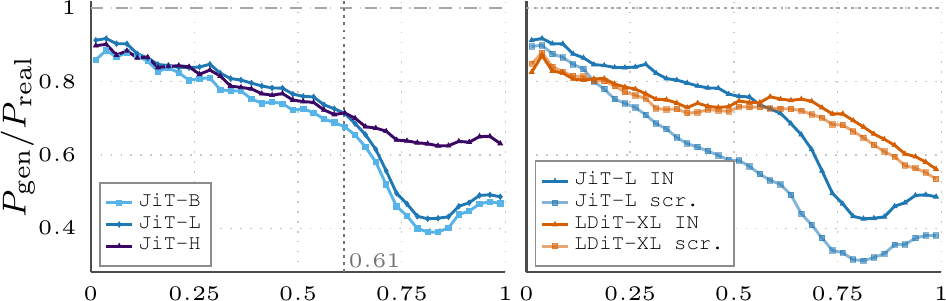
English caption
频谱诊断显示生成图像结构的差异。在图 1 中，我们用生成图像的频谱剖面作为同族内的图像结构诊断，包含三组比较。第一，跨 JiT 规模：所有模型对低到中频的重现都比高频更接近，但 B/16 与 L/16 在高频功率上偏低，H/16 更好地保留高频。L/16 在低中频段对齐又略好，这可能解释其更好的 gFID；因此尽管 H/16 在 RadIN 上没有改善 gFID，它确实改变了频率剖面。第二，Random 与 IN 初始化的 JiT-L/16 对比显示，自然图像初始化改变了生成频谱。最后，潜空间中 Random 与 IN 的 LDiT-XL/1 差异更小，这与分词器已提供结构化表示一致。
English original
4.2 BraTS 的情形
English original
接下来在 BraTS 上研究迁移，分单通道与多通道两种情形。
English original
(a) 单通道
| 去噪器 | 初始化 | 轮数 | gFID↓ | Dens.↑ | Cov.↑ | Δinit |
|---|---|---|---|---|---|---|
| LDiT-XL/1 | ✗ | 40 | 9.22 | 0.67 | 0.76 | — |
| LDiT-XL/1 | ✓ | 40 | 7.66 | 0.68 | 0.78 | 1.56 |
| JiT-L/16 | ✗ | 40 | 37.93 | 0.19 | 0.26 | — |
| JiT-L/16 | ✓ | 40 | 29.34 | 0.25 | 0.36 | 8.59 |
| JiT-H/16 | ✓ | 10 | 29.13 | 0.23 | 0.35 | — |
(b) 多通道
| 去噪器 | 初始化 | 轮数 | gFID↓ | Dens.↑ | Cov.↑ |
|---|---|---|---|---|---|
| JiT-L/16 | ✗ | 55 | 43.97 | 0.09 | 0.14 |
| JiT-L/16 | ✓ | 55 | 35.17 | 0.15 | 0.23 |
| JiT-H/16 | ✓ | 55 | 32.75 | 0.18 | 0.26 |
English caption
单通道 MRI 重现了迁移模式。IN 初始化同时改善潜与像素模型：LDiT-XL/1 改善 1.56 gFID，JiT-L/16 改善 8.59，同样是像素空间绝对增益更大。JiT-H/16 用更少的轮数（10 对 40）达到与 JiT-L/16 相当的 gFID。由于 H/16 的 FLOPs 约为 L/16 的两倍[5]，这相当于约一半的算力。
English original
多通道生成受益于容量。联合生成全部四个模态比单通道任务更难：JiT-L/16 的 gFID 从 29.34 升到 35.17。IN 初始化仍然有益，把预训练的 JiT-L/16 相比 Random 改善 8.80 gFID。与 RadIN 不同，这里额外容量改善了所有指标，JiT-H/16 优于 JiT-L/16，提示当需要联合表示多个共配准 MRI 对比时，容量可能更重要。
English original
4.3 FID 增益是否携带临床信号？
English original
为评估 FID 改善是否转化为临床相关的信息，我们做如下实验。先从训练集采样 10 万样本。然后在完整 RadIN 上以全部（67）类为条件训练两个 JiT-B/16（scratch；IN）模型，并在 19 个（验证）类上生成 10 万样本。这样得到三个具有相同病理分布的 10 万样本池。
English original
| 去噪器 | 初始化 | gFID↓ | FD-Rad↓ | macroF1↑ |
|---|---|---|---|---|
| JiT-B/16 | ✓ | 40.81 | 37.99 | 0.47 |
| JiT-B/16 | ✗ | 72.67 | 87.46 | 0.43 |
English caption
FD-Rad。在表 3 中，我们使用 93 个放射组学特征构成放射学特征空间，刻画低级图像性质，并度量与真实（10 万）放射组学分布的 Fréchet 距离。我们发现更低的 gFID 对应更低的 FD-Rad，即图像更具临床意义。
English original
病理分类。我们在真实与合成数据上训练 ResNet-50 模型，作为临床（19 类病理）分类的代理。在真实数据池上训练的分类器达到 0.72。对合成池（表 3），我们发现更低的 gFID 对应更好的 macroF1，指向更有意义的临床生成。
English original
5 迁移的是什么：空间结构，而非语义
English original
由于像素去噪器承载全部先验，我们聚焦像素空间 JiT，追问收益反映的是高层（语义）还是低层（空间）结构。
English original
5.1 语义不预测生成质量
English original
沿用 Yu 等，一个假设是预训练通过语义起作用，或迁移语义特征，或提供能学到更强语义的初始化。我们对冻结的去噪器表示做探针，分类 RadIN 的 19 个病理类。由于生成模型以 5 个粗粒度解剖类为条件，探针捕获的是生成标签之外的语义信息。
English original
更高的探针精度并不带来更好的生成。从零训练的 JiT-B/16 探针精度与 IN 版相近（0.56），但生成样本差得多（gFID 55.50 对 36.48，图 2）。跨模型规模同样（L/H 见附录），所有模型表现相当。JiT-B/16 探针略高于 JiT-H/16（0.56 对 0.54），但 gFID 更差（36.48 对 32.83）。在潜空间中，scratch 模型的探针也高于 IN 初始化（0.557 对 0.510），而生成更差（附录）。语义可分性无法解释迁移收益。
English original
语义探针精度：scratch 与 IN 几乎相同
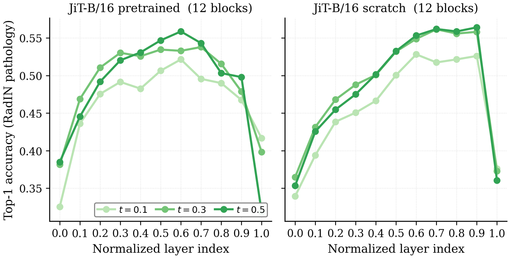
English caption
5.2 空间结构追踪生成质量
English original
另一个假设是收益来自空间（低层）结构。为检验这一点，我们收集本文训练的所有 JiT 模型，即预训练、scratch、混合（5.3 节）与有限数据（6.4 节）的模型。直接在冻结去噪器表示上应用 LDS 得到不确定的结果。我们为去噪器表示改造 LDS，得到 LDSC，并在 12 个模型上以 追踪 gFID（图 3）。拟合出的规律是 。我们追问这条规律仅凭 LDSC 差距能预测多少预训练-scratch 的 gFID 差距：把观测到的 LDSC 差距乘以拟合斜率得到预测的 gFID 差距，再除以实际 gFID 差距，得到 LDSC 信号捕获的比例。B/L/H 分别捕获 92/58/52%，平均 67%。两项检验确认这一点：1) 对每个测得的 gFID 施加 （大于种子噪声）的蒙特卡洛扰动，重拟合 5k 次得到 69±6%；2) 重拟合前去掉某规模的 IN 与 scratch 两个模型，再预测该规模的差距，得到 95/62/42%，同样约 2/3。更好的空间组织是预训练发挥作用的一条通道。
English original
12 个 JiT 变体：LDSC 与 gFID 的线性关系
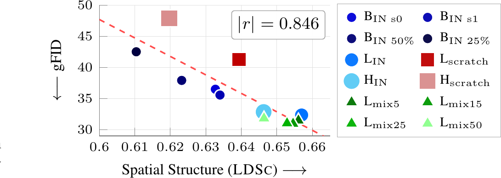
English caption
5.3 混合域训练
English original
早到中期表示跨域共享。我们进一步检验结构假设，在 RadIN 与 10% IN 上联合训练 JiT-L/16（mixed-JiT-L/16），使单一模型在内部同时表示两个域，并测量自然与医学输入下逐块的表示余弦相似度（在 token 序列上拼接）。图 4 显示，早到中期块（0–16）跨域高度相似（），即模型在那里对两个域计算相似的表示。更深的块（17–22）行为不同：跨域相似度下降（–0.50），提示领域特异行为。
English original
混合模型的逐块跨域余弦相似度
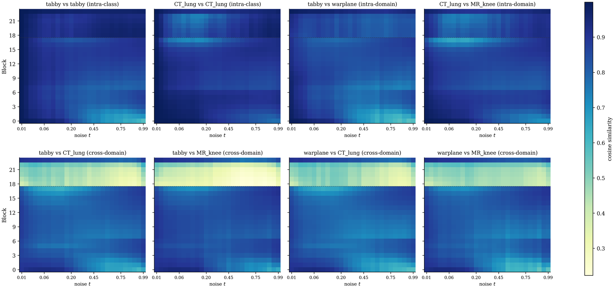
English caption
| IN 混合比例（%） | 0 | 5 | 15 | 25 | 50 |
|---|---|---|---|---|---|
| RadIN:IN | 1:0 | 19:1 | 5.7:1 | 3:1 | 1:1 |
| gFID↓ | 32.34 | 31.46 | 30.94 | 31.01 | 31.80 |
English caption
自然图像混合提升医学保真度。由于两个域产生相似的表示，我们扫描加入混合数据中的自然图像比例。gFID 在所有比例下都改善（表 4），最大增益（1.4 gFID）出现在 15%。即使在 1:1 也观察到小幅改善，但其幅度接近 gFID 噪声。
English original
6 收益与自然图像初始化绑定
English original
我们追问 IN 初始化的收益能否在没有它的情况下复现，或分解为更简单的部分。为复现它，我们测试域内医学预训练、统计匹配重初始化与医学数据扩展；在我们的设定中没有一个能匹配 IN 迁移。为分解它，我们比较参数漂移与块回退，发现漂移不能预测功能重要性。
English original
6.1 自然图像迁移优于医学预训练
English original
IN 初始化最自然的替代是用医学数据预训练。据我们所知，在兼容架构上不存在可用的 2D 放射学去噪器权重，因此我们自行训练。
English original
单通道目标。在 RadIN 上从零预训练 160 轮、再在单通道 BraTS 上微调 20 轮的 JiT-B/16，比直接做 IN 微调差 5 个 gFID（表 5）。在 IN 之上再加一个 RadIN 阶段略有帮助，但在种子噪声范围内（，附录）。
English original
| 去噪器（初始化） | 预训练 | 轮数 | gFID↓ | Dens.↑ | Cov.↑ |
|---|---|---|---|---|---|
| JiT-B/16（Rand） | RadIN | 160 | 36.73 | 0.209 | 0.277 |
| JiT-B/16（IN） | RadIN | 80 | 31.13 | 0.221 | 0.320 |
| JiT-B/16（IN） | — | — | 31.73 | 0.218 | 0.322 |
English caption
多通道目标。我们检验在迁移到多通道 BraTS 之前，插入一个单通道医学阶段是否有帮助（表 6）。直接 IN 迁移最好（40.17）。插入医学阶段只会变差：经单通道 BraTS 后为 50.90，经 RadIN 后为 75.40。
English original
| 去噪器 | 预训练 | 轮数 | gFID↓ |
|---|---|---|---|
| JiT-L/16 | RadIN | 30 | 75.40 |
| JiT-L/16 | BraTS | 30 | 50.90 |
| JiT-L/16 | — | 30 | 40.17 |
English caption
6.2 逐张量权重统计量不足
English original
如果 IN 只是设定了合适的逐张量尺度，统计匹配（ST）初始化应能复现其收益。相反，ST 在两种范式中都比 Random 更差。表 7 显示 JiT-L 的 gFID 从 41.27 升到 62.64，LDiT-XL 从 19.05 升到 51.45。收益来自具体的权重取值，而不是它们的分布。
English original
| 去噪器 | Random | ST | IN |
|---|---|---|---|
| LDiT-XL/1 | 19.05 | 51.45 | 16.43 |
| JiT-L/16 | 41.27 | 62.64 | 32.34 |
English caption
6.3 参数漂移与功能重要性
English original
我们追问训练中某层的变化是否反映它的重要性。用参数漂移度量变化，用块回退度量重要性。
English original
参数漂移（左）与逐块回退重要性（右）
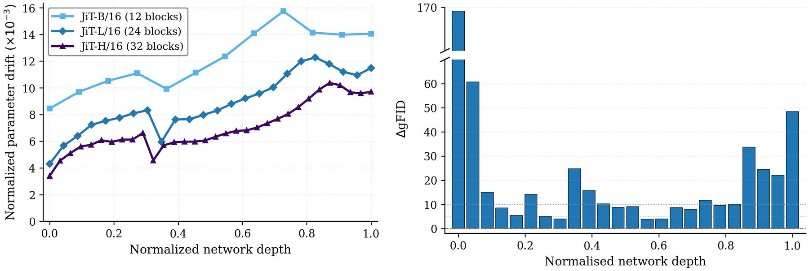
English caption
更大的模型漂移更少。图 5（左）显示漂移随深度增加。早期块更接近其 IN 初始化，更深的块移动更远。跨块平均，漂移随模型规模减小：12.10（B）、8.80（L）、6.98（H）（），因此更大的模型适应更少。
English original
功能重要性不能仅由漂移刻画。块回退（图 5 右）给出与参数漂移不同的图景。把第一个 Transformer 块回退到其 IN 权重破坏性最大，使 gFID 上升约 170，尽管该块的漂移比更深的块更小。第二个块与最后四个块也很重要。若干中间块回退后 gFID 变化较小。为排除激活不匹配的影响，附录中还在块回退后做了激活重归一化。结果趋势相似，因此漂移无法刻画功能重要性。
English original
6.4 数据规模无法弥合差距
English original
最后一个假设是：更多医学数据能让模型从零学到迁移所提供的东西。
English original
有限数据分析。我们在 RadIN 的 25%、50% 与 100% 上，分别从 scratch 与 IN 初始化训练 JiT-B/16（图 6）。预训练模型在每个规模上都领先；差距缩小（从 30.0 到 19.0）但仍然很大。IN 在 25% 上优于 scratch 在 100%（42.5 对 55.5），而 scratch 在 25% 上不收敛。
English original
数据规模：预训练在每个比例上都领先
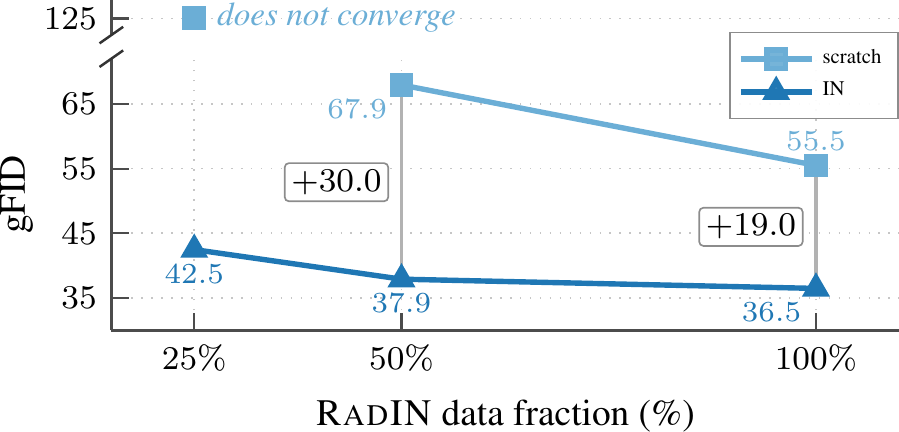
English caption
数据需求外推。对每个模型拟合 ，得到 与 。如果 scratch 以 改善直到达到 IN 在 25% 时的保真度，此后以 改善，则弥合差距大约需要 10 倍数据（一个示意性估计）。
English original
7 结论与讨论
English original
我们对面向医学图像生成的自然图像去噪器迁移做了系统研究。IN 迁移在潜空间与像素空间、模型规模以及两个放射学数据集上稳定改善生成性能。增益也体现在放射组学距离与病理分类上。从零训练的模型达到相近的语义探针精度却生成更差的样本，而空间组织（以 LDSC 度量）与 gFID 在 上相关，说明空间结构是预训练发挥作用的通道。尽管自然图像与医学图像在高层内容上不同，混合域去噪器在网络的大部分层对两者计算相似表示，把自然图像混入医学训练可提升保真度。收益与自然图像初始化绑定，我们测试的替代方案都无法复现，包括域内医学预训练。从生成式建模的角度看，自然图像对医学图像生成非常有用。
English original
局限与未来工作。LDSC 预测约三分之二的预训练收益，因此空间组织是它发挥作用的通道之一，但可能不是全部解释。究竟继承了什么（边缘、纹理还是轮廓），以及架构、数据、训练预算与优化各自如何贡献，仍待回答。此外，自然图像的收益能否仅从医学数据学到仍是开放问题。我们的外推缩放的是数据数量，而非多样性。再者，我们的临床证据依赖代理指标，在提出任何临床效用主张之前需要专家临床评估。最后，我们研究 2D 生成——这是 X 光与组织病理学的原生格式，即使是体积扫描也是逐层阅读。扩展到 3D 生成是自然的下一步。
English original
致谢
English original
本工作由瑞士国家科学基金会（TMSGI3_225913、CRSK-3_229103）与 Chad Tough Defeat DIPG 基金会资助。
English original
我们感谢 EuroHPC 联合体授予我们使用 Discoverer+ 的权限（项目 EHPC-DEV-2026D06-289），该机器由保加利亚索菲亚科技园的 PetaSC 托管，并由 EuroHPC JU 与保加利亚政府共同资助。E. Georgiou 感谢 T. Kouzelis 促成他与 I. Kakogeorgiou 的联系。
English original
附录 A 附加结果
English original
| rFID ↓ | ||
|---|---|---|
| 分词器 | BraTS | RadIN |
| 自然图像 | ||
| SDVAE | 2.27 | 2.63 |
| SD3.5VAE | 0.48 | 0.92 |
| VAVAE | 1.34 | 1.88 |
| RAEv2（DINOv3-L-k7） | 1.60 | 2.42 |
| 医学域 | ||
| MedVAE | 6.43 | 6.35 |
English caption
理论上，最优压缩器接近其训练数据的 Kolmogorov 复杂度：它学习模式而非记忆，并复用这些模式来压缩分布外数据。我们发现自然 VAE 在没有医学训练的情况下也能非常好地压缩放射图像。我们把这视为另一个正向迁移结果，并假设 MedVAE 的表现源于数据与优化有限，例如训练轮数、正则化。我们并不声称医学数据与预训练一般来说没有帮助。我们的示意性外推提示弥合差距需要多得多的医学数据，而自然图像充足且可迁移到放射学。
English original
| 种子 | JiT-B/16 | LDiT-XL/1 | ||
|---|---|---|---|---|
| Rand. | IN | Rand. | IN | |
| 0 | 55.50 | 36.48 | 19.05 | 16.43 |
| 1 | 56.30 | 35.71 | 18.62 | 16.28 |
| 2 | 54.27 | 36.33 | — | — |
| 均值 | 55.36 | 36.17 | 18.84 | 16.36 |
| δ | 2.03 | 0.77 | 0.43 | 0.15 |
| σ | 1.02 | 0.41 | - | - |
English caption
更大规模的语义/病理探针对比
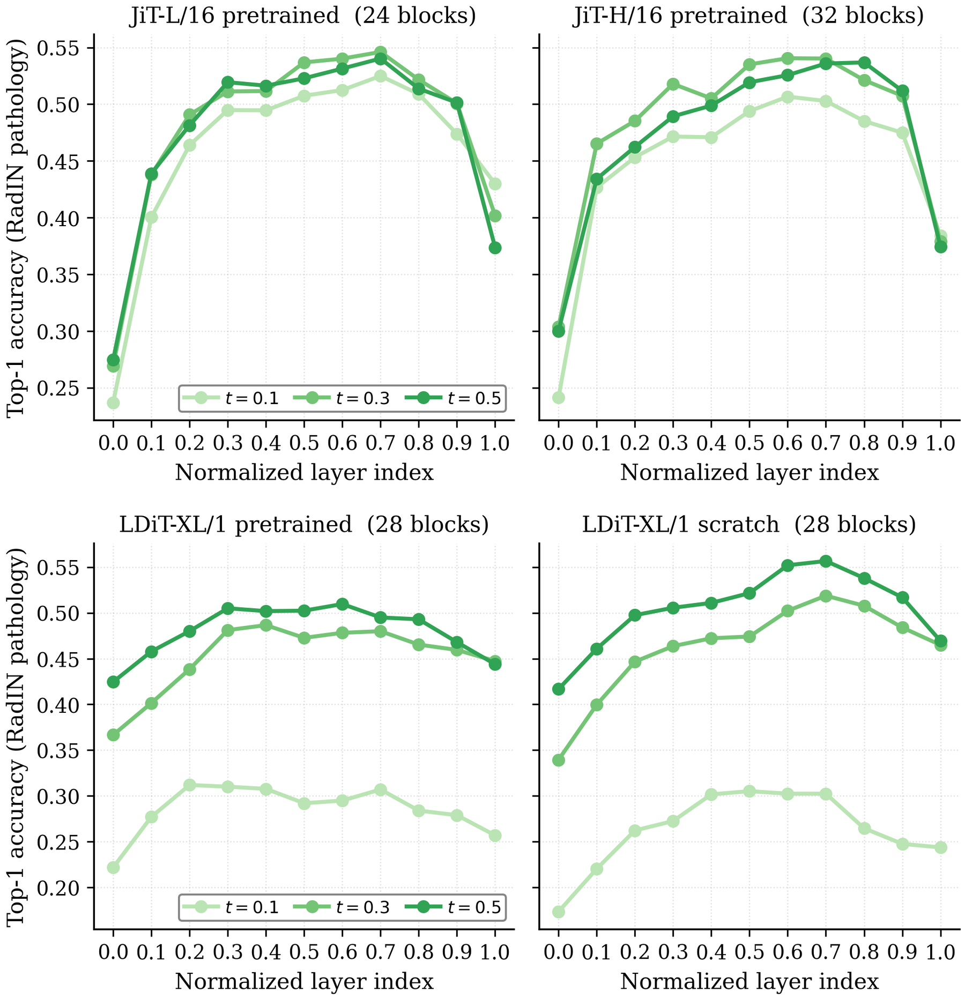
English caption
IN 初始化的 LDiT-XL/1 参数漂移
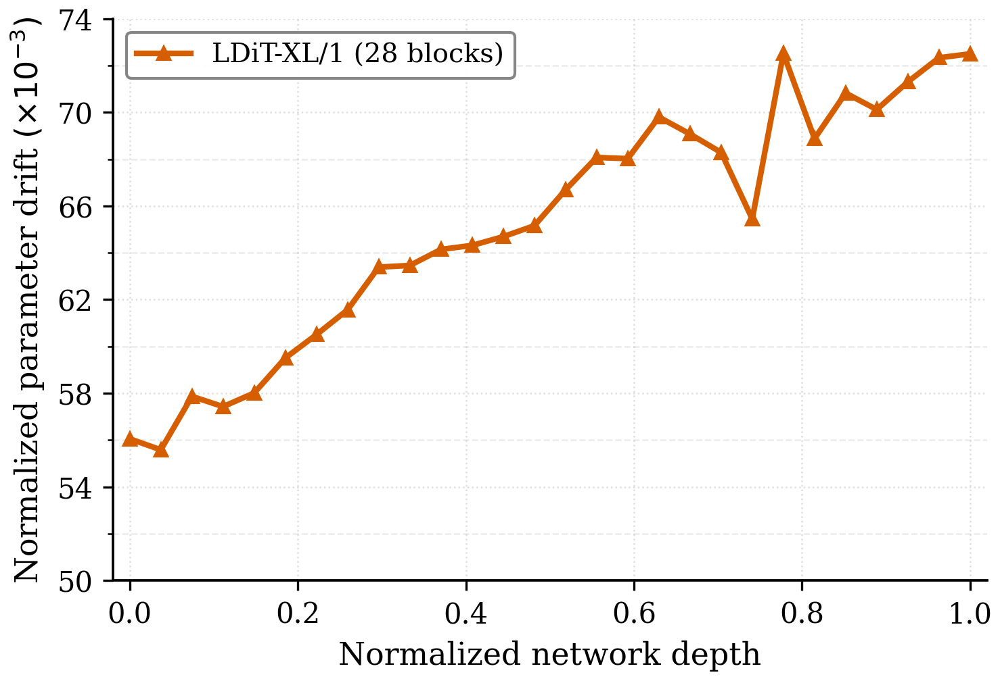
English caption
LDiT-XL/1 的逐块回退
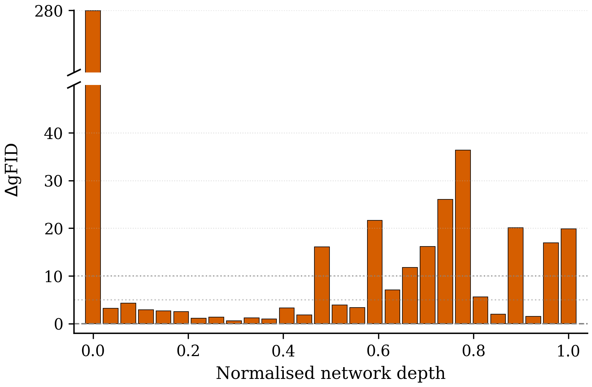
English caption
| 方法 | ||||
|---|---|---|---|---|
| Reinit | +167.4 | +60.7 | +33.8 | +48.5 |
| + Renorm | +101.0 | +63.1 | +14.3 | +19.0 |
English caption
附录 B 数据集
English original
B.1 RadImageNet
English original
我们使用 RadImageNet 作为主要的大规模、多样化 2D 放射学数据集。我们获得了其 CT 与 MR 子集的访问权限。子集覆盖五个解剖区域：CT 腹部、CT 胸部（肺）、MR 髋、MR 膝、MR 肩。每个区域进一步按病理拆分子文件夹，共 71 个病理类，其中 67 个类样本超过 100。
English original
提供的数据集包含 530,534 张 2D 切片 PNG。我们随机留出 15,000 张作为验证，其余 515,534 张用于训练。预处理包括中心裁剪与双三次上采样到 256×256。类条件生成器以五个（模态，部位）区域标签为条件。更细的病理分类只在评估时进入，线性探针分析通过过滤验证集中少于 100 样本的稀有（长尾）病理类，限定在 19 个类。
English original
| 区域 | 类 |
|---|---|
| CT 腹部 | renal_lesion |
| liver_lesion | |
| bowel_abnormality | |
| bowel_inflammation | |
| post_op | |
| CT 肺 | Airspace_opacity |
| Nodule | |
| interstitial_lung_disease | |
| MR 膝 | chondral_abnormality |
| meniscal_abnormality | |
| soft_tissue_fluid_collection | |
| bone_inflammation | |
| acl_pathology | |
| mcl_pathology | |
| intra | |
| MR 肩 | labral_pathology |
| soft_tissue_fluid | |
| soft_tissue_edema | |
| supraspinatus_pathology |
English caption
B.2 BraTS
English original
我们使用 2024 BraTS 治疗后成人胶质瘤队列，由七个学术医学中心贡献。每位受试者采集四个共配准、去颅骨的 1mm 各向同性多参数 MRI 体，覆盖标准临床对比：原生 T1（T1）、增强后 T1 加权（T1c）、T2 加权（T2）与 T2 液体衰减反转恢复（T2FLAIR）。BraTS 包含 1,621 名训练患者（6,484 个 3D mpMRI 体）。官方验证划分提供 188 名患者（752 个体）的留出队列。
English original
我们把每个体展平为 2D：保留轴位切片 15–154（每体 140 张），并把 192×192 双三次上采样到 256×256。每个多通道（患者，切片）对存为单个 4×256×256 张量，四个共配准模态占据通道维，得到 226,940 个训练与 26,320 个验证多通道样本。
English original
我们以两种方式使用数据。在 4 通道设置中，每张切片是一个 4 通道图像。在单通道设置中，每个模态是单独的灰度图像（为 IN 初始化复制为三通道），得到 907,760 个训练与 105,280 个验证单通道图像。
English original
附录 C 空间结构指标
English original
LDS 与 LDSC 的构造
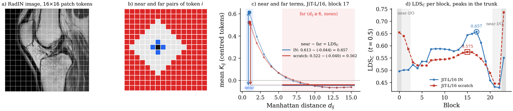
English caption
C.1 LDS 与 LDSC 的实现
English original
我们沿用 3.3 节的定义，并使用 Singh 等的参考实现。JiT 把 256×256 图像 token 化为 16×16 网格的 个 patch token。计算指标前移除 in-context（类）token。近邻对是相邻 token（，即 ；每个内部 token 有 4 个），远距对满足 （每个中心 token 195 个），沿用 Singh 等（图 10 a,b）。高 LDSC 意味着邻近 patch——例如鸟的羽毛或 MRI 中的组织——具有相似表示，而远距 patch 不同。对 LDSC，我们在计算余弦核之前对每张图像的 token 去均值中心化，因此 LDSC 是中心化 token 的近项减远项（图 10c）。我们在 计算每个块的 LDSC，并报告排除 I/O 块后的块间峰值（图 10 d）。
English original
C.2 对 I/O 排除规则的稳健性
English original
正文只排除第一与最后一块。然而在更深的模型中，近输入区域跨越不止一个块。例如 L/16 与 H/16 的 scratch 去噪器在第 1 块达到最高 LDSC，紧接输入之后，那里的表示仍接近像素空间（图 10d、图 11 上）。这缩小了它们的 IN 与 scratch 差距（L 与 H 为 2.8% 与 4.3%，B 为 10.3%）。另一种选择是排除固定比例的深度，例如两端各 5% 或 10%，即去掉这些块并聚焦中间层。scratch 的峰值移入主干（10% 时 L/16 第 15 块、H/16 第 19 块），差距在各规模间变得相近（10% 时为 10.3/14.3/13.9%），与 gFID 的相关性从 升到 0.903 与 0.945（图 11 下）。IN 的峰值不变。因此我们的结论在三种规则下都成立，首末块规则是保守选择。
English original
三种 I/O 排除规则下的 LDSC 与相关性
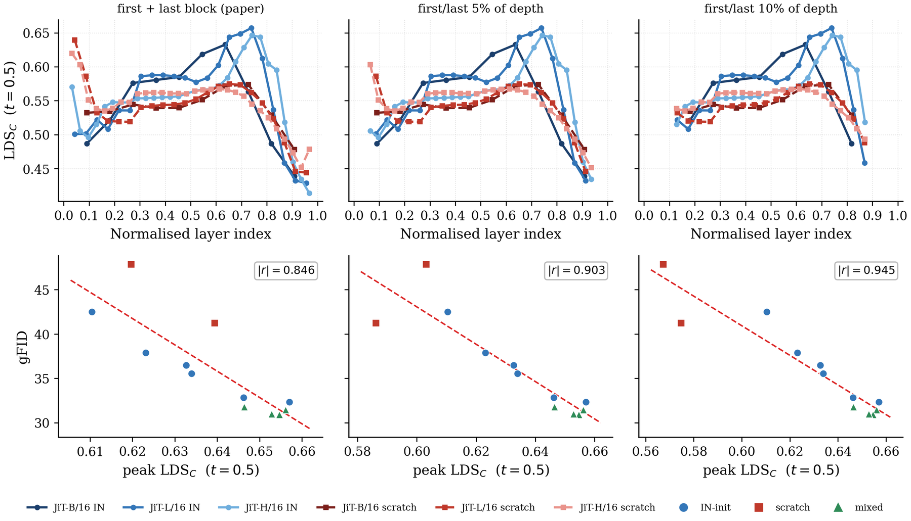
English caption
附录 D 评价指标
English original
评估设置。所有定量指标用 dgm-eval 套件计算，使用 Inception-V3 特征提取器。评估特征以 fp32 提取。
English original
dgm-eval suite, using the Inception-V3 feature extractor. Evaluation features are extracted in fp32.FID 度量真实与生成图像分布之间的特征距离。它使用 Inception-V3 网络，在假设两个特征分布都是多元高斯的前提下计算 Fréchet 距离。越低越好。
English original
密度与覆盖度是对 precision/recall 的改进，使其对离群点与大特征方差更稳健。Dens. 统计有多少个真实样本的 -NN 邻域包含每个生成样本（保真度）；Cov. 是邻域内至少含一个生成样本的真实样本比例（多样性）。越高越好。
English original
频谱剖面。是诊断而非主指标。我们对每张图做 2D-FFT，按空间频率径向平均功率得到 ，并绘制比值 ：1 表示在该频率与真实谱一致，<1 为产出不足，>1 为过度。我们只用它做同族比较。不跨架构比较，因为它们的谱差异与迁移无关。
English original
| LDiT-XL/2 | LDiT-XL/2 | LDiT-XL/1 | |
|---|---|---|---|
| 分词器 | MedVAE | SDVAE | VAVAE |
| 架构 | |||
| 分词器下采样 | 8× | 8× | 16× |
| 分词器潜通道数 | 4 | 4 | 32 |
| 潜网格（输入 256×256） | 32×32 | 32×32 | 16×16 |
| 潜 patch 大小 | 2 | 2 | 1 |
| token 数 | 256 | 256 | 256 |
| Transformer 块 | 28 | 28 | 28 |
| 隐藏维 | 1152 | 1152 | 1152 |
| 注意力头 | 16 | 16 | 16 |
| MLP 比例 | 4 | 4 | 4 |
| QK-norm | ✓ | ✓ | ✓ |
| 激活 | SwiGLU | SwiGLU | SwiGLU |
| 位置编码 | RoPE | RoPE | RoPE |
| 归一化 | RMSNorm | RMSNorm | RMSNorm |
| 可训练参数 | 675M | 675M | 675M |
| 优化与训练 | |||
| 传输 | rect. flow | rect. flow | rect. flow |
| 预测参数化 | velocity (v) | velocity (v) | velocity (v) |
| 损失 | v 上的 MSE | v 上的 MSE | v 上的 MSE |
| 速度方向损失（辅助） | ✓ | ✓ | ✓ |
| 采样 | logit-normal (） | logit-normal (） | logit-normal (） |
| 优化器 | AdamW | AdamW | AdamW |
| 0.9, 0.95 | 0.9, 0.95 | 0.9, 0.95 | |
| 梯度范数裁剪 | 1.0 | 1.0 | 1.0 |
| 学习率 | |||
| 学习率调度 | 常数 | 常数 | 常数 |
| 预热 | 无 | 无 | 无 |
| 有效批大小 | 384 | 384 | 384 |
| 精度 | bf16 | bf16 | bf16 |
| 采样 | |||
| 采样器 | Euler ODE | Euler ODE | Euler ODE |
| 采样步数 | 250 | 250 | 250 |
| CFG 尺度 | 1.0 | 1.0 | 1.0 |
English caption
| JiT-B/16 | JiT-L/16 | JiT-H/16 | |
|---|---|---|---|
| 架构 | |||
| patch 大小 | 16×16 | 16×16 | 16×16 |
| token 数（输入 256×256） | 256 | 256 | 256 |
| Transformer 块 | 12 | 24 | 32 |
| 隐藏维 | 768 | 1024 | 1280 |
| 注意力头 | 12 | 16 | 16 |
| MLP 比例 | 4 | 4 | 4 |
| QK-norm | ✓ | ✓ | ✓ |
| 激活 | SwiGLU | SwiGLU | SwiGLU |
| 位置编码 | sin-cos + RoPE | sin-cos + RoPE | sin-cos + RoPE |
| 归一化 | RMSNorm | RMSNorm | RMSNorm |
| 可训练参数 | 131M | 459M | 952M |
| 优化与训练 | |||
| 传输 | rect. flow | rect. flow | rect. flow |
| 预测参数化 | x-预测 | x-预测 | x-预测 |
| 损失 | v 上的 MSE | v 上的 MSE | v 上的 MSE |
| 采样 | logit-normal (） | logit-normal (） | logit-normal (） |
| 优化器 | AdamW | AdamW | AdamW |
| 0.9, 0.95 | 0.9, 0.95 | 0.9, 0.95 | |
| 学习率 | |||
| 学习率调度 | 常数 | 常数 | 常数 |
| 预热 | 5 轮 | 5 轮 | 5 轮 |
| 有效批大小 | 288 | 288 | 144 |
| 精度 | bf16 | bf16 | bf16 |
| 采样 | |||
| 采样器 | Heun | Heun | Heun |
| 采样步数 | 50 | 50 | 50 |
| CFG 尺度 | 1.0 | 1.0 | 1.0 |
English caption
JiT-B：scratch 与预训练的无筛选样本
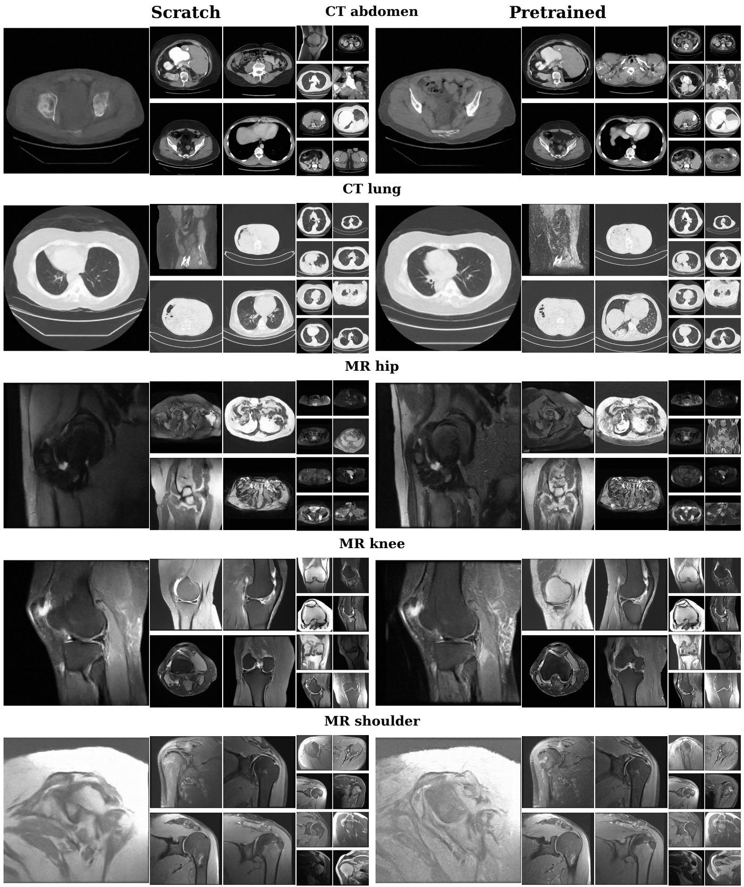
English caption
JiT-L：scratch 与预训练的无筛选样本
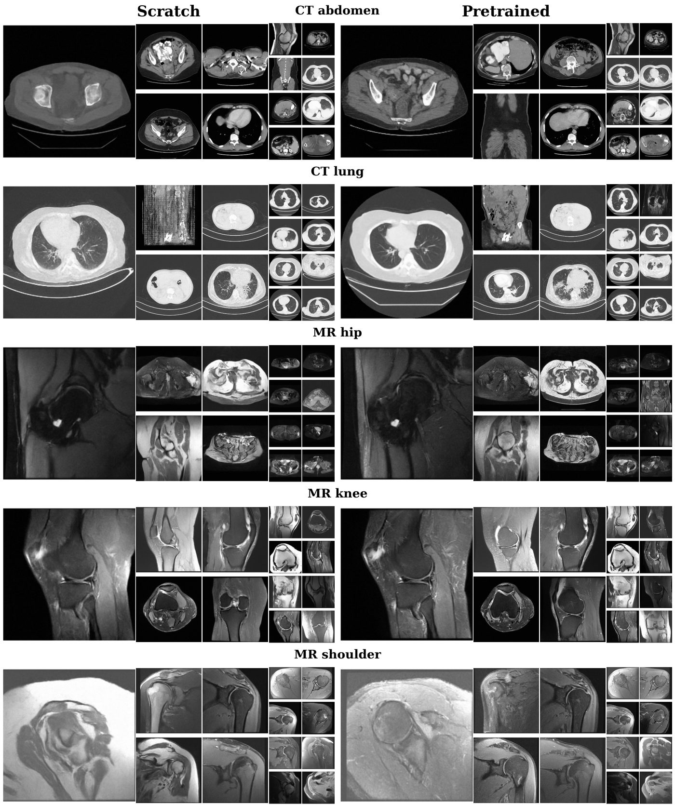
English caption
JiT-H：scratch 与预训练的无筛选样本
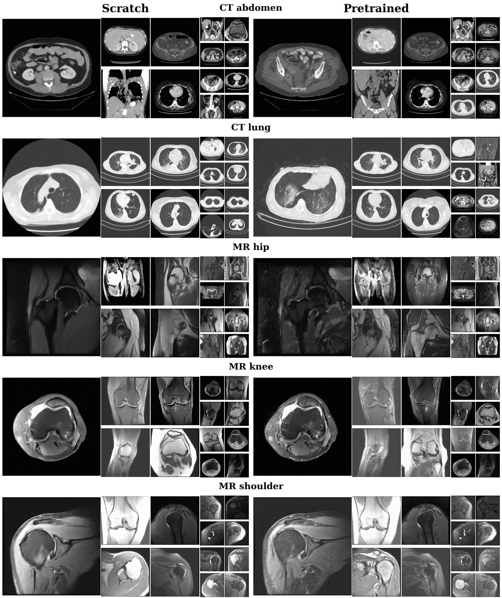
English caption
BraTS：JiT-L 与 LDiT-XL 的无筛选样本
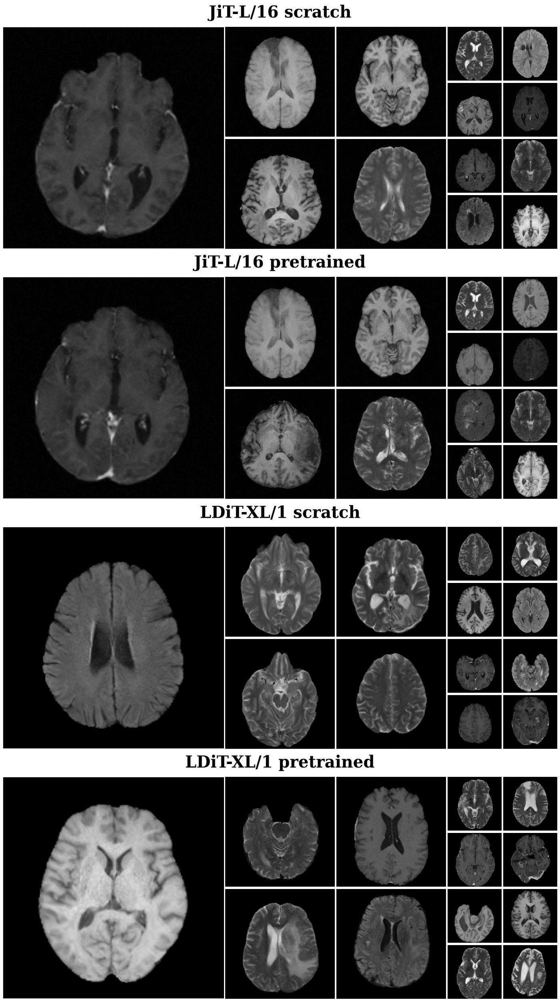
English caption
图表索引
序号与原文一致。图 1、3 在 4.1 与 5.2 节，图 2 在 5.1 节，图 4 在 5.3 节，图 5 在 6.3 节，图 6 在 6.4 节；图 7–11 与表 8–10 在附录 A/C，表 11 在附录 B，表 12–13 与图 12–15 在附录 D 之后。表 2 含 (a)(b) 两个面板。
脚注
- [1]LDiT 官方实现：github.com/hustvl/LightningDiT。 返回正文 ↩
English original
https://github.com/hustvl/LightningDiT - [2]
- [3]
- [4]评估套件：github.com/layer6ai-labs/dgm-eval。 返回正文 ↩
English original
https://github.com/layer6ai-labs/dgm-eval - [5]固定序列长度时，Transformer 的训练 FLOPs 大致与参数数量成正比，因此参数翻倍大致意味着 FLOPs 翻倍。 返回正文 ↩
English original
At fixed sequence length, transformer training FLOPs are approximately proportional to the parameter count, so doubling the parameters roughly doubles the FLOPs.
参考文献
共 74 条，编号与原文参考文献列表一致（原文按第一作者字母序编号）。原文条目照录，中文为标题翻译（不译作者与期刊名）。
- [1]
Robert G. Alexander, Stephen Waite, Stephen L. Macknik, and Susana Martinez-Conde. What do radiologists look for? Advances and limitations of perceptual learning in radiologic search. Journal of Vision, 20(10):17, 2020.
放射科医生在寻找什么？放射学搜索中知觉学习的进展与局限
- [2]
Alan Baade, Eric Ryan Chan, Kyle Sargent, Changan Chen, Justin Johnson, Ehsan Adeli, and Li Fei-Fei. Latent forcing: Reordering the diffusion trajectory for pixel-space image generation. In Forty-third International Conference on Machine Learning, 2026.
潜变量强制：为像素空间图像生成重排扩散轨迹
- [3]
Pierre Chambon, Christian Bluethgen, Jean-Benoit Delbrouck, Rogier Van der Sluijs, Małgorzata Połacin, Juan Manuel Zambrano Chaves, Tanishq Mathew Abraham, Shivanshu Purohit, Curtis P Langlotz, and Akshay Chaudhari. Roentgen: vision-language foundation model for chest x-ray generation. arXiv preprint arXiv:2211.12737, 2022.
RoentGen：用于胸片生成的视觉-语言基础模型
- [4]
Joseph Cho, Mrudang Mathur, Cyril Zakka, Dhamanpreet Kaur, Matthew Leipzig, Alex Dalal, Aravind Krishnan, Eubee Koo, Karen Wai, Cindy S Zhao, et al. Medisyn: A generalist text-guided latent diffusion model for diverse medical image synthesis. arXiv preprint arXiv:2405.09806, 2024.
MediSyn：面向多样医学图像合成的通用文本引导潜扩散模型
- [5]
Maria Correia de Verdier, Rachit Saluja, Louis Gagnon, Dominic LaBella, Ujjwall Baid, Nourel Hoda Tahon, Martha Foltyn-Dumitru, Jikai Zhang, Maram Alafif, Saif Baig, et al. The 2024 brain tumor segmentation (brats) challenge: Glioma segmentation on post-treatment mri. arXiv preprint arXiv:2405.18368, 2024.
2024 脑肿瘤分割（BraTS）挑战：治疗后 MRI 的胶质瘤分割
- [6]
Jia Deng, Wei Dong, Richard Socher, Li-Jia Li, Kai Li, and Li Fei-Fei. Imagenet: A large-scale hierarchical image database. In 2009 IEEE Conference on Computer Vision and Pattern Recognition, pages 248–255, 2009.
ImageNet：大规模分层图像数据库
- [7]
Zolnamar Dorjsembe, Hsing-Kuo Pao, Sodtavilan Odonchimed, and Furen Xiao. Conditional diffusion models for semantic 3d brain mri synthesis. IEEE Journal of Biomedical and Health Informatics, 28(7):4084–4093, 2024.
用于语义 3D 脑 MRI 合成的条件扩散模型
- [8]
Alexey Dosovitskiy, Lucas Beyer, Alexander Kolesnikov, Dirk Weissenborn, Xiaohua Zhai, Thomas Unterthiner, Mostafa Dehghani, Matthias Minderer, Georg Heigold, Sylvain Gelly, Jakob Uszkoreit, and Neil Houlsby. An image is worth 16x words: Transformers for image recognition at scale. In International Conference on Learning Representations, 2021.
一图胜 16×16 词：用于大规模图像识别的 Transformer
- [9]
Betty Edwards. Drawing on the Right Side of the Brain. J. P. Tarcher, Los Angeles, 1979.
用右脑绘画
- [10]
Patrick Esser, Robin Rombach, and Bjorn Ommer. Taming transformers for high-resolution image synthesis. In Proceedings of the IEEE/CVF conference on computer vision and pattern recognition, pages 12873–12883, 2021.
驯服 Transformer 用于高分辨率图像合成
- [11]
Patrick Esser, Sumith Kulal, Andreas Blattmann, Rahim Entezari, Jonas Müller, Harry Saini, Yam Levi, Dominik Lorenz, Axel Sauer, Frederic Boesel, et al. Scaling rectified flow transformers for high-resolution image synthesis. In Forty-first international conference on machine learning, 2024. 2
扩展 rectified flow Transformer 用于高分辨率图像合成
- [12]
Paul Friedrich, Julia Wolleb, Florentin Bieder, Alicia Durrer, and Philippe C Cattin. Wdm: 3d wavelet diffusion models for high-resolution medical image synthesis. In MICCAI workshop on deep generative models, pages 11–21. Springer, 2024.
WDM：用于高分辨率医学图像合成的 3D 小波扩散模型
- [13]
Kunihiko Fukushima. Neocognitron: A self-organizing neural network model for a mechanism of pattern recognition unaffected by shift in position. Biological cybernetics, 36 (4):193–202, 1980.
新认知机：一种不受位置平移影响的自组织神经网络模型
- [14]
Ian J. Goodfellow, Jean Pouget-Abadie, Mehdi Mirza, Bing Xu, David Warde-Farley, Sherjil Ozair, Aaron Courville, and Yoshua Bengio. Generative adversarial nets. In Advances in Neural Information Processing Systems. Curran Associates, Inc., 2014.
生成对抗网络
- [15]
Changlu Guo, Anders Nymark Christensen, and Morten Rieger Hannemose. Med-art: Diffusion transformer for 2d medical text-to-image generation. In MICCAI Workshop on Deep Generative Models, pages 57–66. Springer, 2025.
Med-Art：用于 2D 医学文本到图像生成的扩散 Transformer
- [16]
Pengfei Guo, Can Zhao, Dong Yang, Ziyue Xu, Vishwesh Nath, Yucheng Tang, Benjamin Simon, Mason Belue, Stephanie Harmon, Baris Turkbey, and Daguang Xu. Maisi: Medical ai for synthetic imaging. In 2025 IEEE/CVF Winter Conference on Applications of Computer Vision (WACV), pages 4430–4441, 2025.
MAISI：面向合成成像的医学 AI
- [17]
Martin Heusel, Hubert Ramsauer, Thomas Unterthiner, Bernhard Nessler, and Sepp Hochreiter. Gans trained by a two time-scale update rule converge to a local nash equilibrium. In Advances in Neural Information Processing Systems, 2017.
用双时间尺度更新规则训练的 GAN 收敛到局部 Nash 均衡
- [18]
Jonathan Ho, Ajay Jain, and Pieter Abbeel. Denoising diffusion probabilistic models. Advances in neural information processing systems, 33:6840–6851, 2020.
去噪扩散概率模型
- [19]
Jonathan Ho, Chitwan Saharia, William Chan, David J Fleet, Mohammad Norouzi, and Tim Salimans. Cascaded diffusion models for high fidelity image generation. Journal of Machine Learning Research, 23(47):1–33, 2022.
用于高保真图像生成的级联扩散模型
- [20]
Jing Huang, S.R. Kumar, M. Mitra, Wei-Jing Zhu, and R. Zabih. Image indexing using color correlograms. In Proceedings of IEEE Computer Society Conference on Computer Vision and Pattern Recognition, pages 762–768, 1997.
使用颜色相关图的图像索引
- [21]
Peng Huang, Xue Gao, Lihong Huang, Jing Jiao, Xiaokang Li, Yuanyuan Wang, and Yi Guo. Chest-diffusion: A lightweight text-to-image model for report-to-cxr generation. In 2024 IEEE International Symposium on Biomedical Imaging (ISBI), pages 1–5. IEEE, 2024.
Chest-Diffusion：用于报告到胸片生成的轻量文本到图像模型
- [22]
David H. Hubel and Torsten N. Wiesel. Receptive fields, binocular interaction and functional architecture in the cat’s visual cortex. The Journal of Physiology, 160(1):106–154, 1962.
猫视觉皮层的感受野、双眼交互与功能架构
- [23]
Yukiyasu Kamitani and Frank Tong. Decoding the visual and subjective contents of the human brain. Nature Neuroscience, 8(5):679–685, 2005.
解码人脑的视觉与主观内容
- [24]
Mikhail Karasikov, Joost van Doorn, Nicolas Känzig, Melis Erdal Cesur, Hugo Mark Horlings, Robert Berke, Fei Tang, and Sebastian Otálora. Training state-of-the-art pathology foundation models with orders of magnitude less data. In Medical Image Computing and Computer Assisted Intervention – MICCAI 2025, pages 573–583. Springer Nature Switzerland, 2025.
用少几个数量级的数据训练最先进的病理基础模型
- [25]
Alexander Ke, William Ellsworth, Oishi Banerjee, Andrew Y Ng, and Pranav Rajpurkar. Chextransfer: performance and parameter efficiency of imagenet models for chest x-ray interpretation. In Proceedings of the conference on health, inference, and learning, pages 116–124, 2021.
CheXtransfer：ImageNet 模型用于胸片解读的性能与参数效率
- [26]
Firas Khader, Gustav Müller-Franzes, Soroosh Tayebi Arasteh, Tianyu Han, Christoph Haarburger, Maximilian Schulze-Hagen, Philipp Schad, Sandy Engelhardt, Bettina Baeßler, Sebastian Foersch, et al. Denoising diffusion probabilistic models for 3d medical image generation. Scientific reports, 13(1):7303, 2023.
用于 3D 医学图像生成的去噪扩散概率模型
- [27]
Diederik P. Kingma and Max Welling. Auto-encoding variational bayes. In 2nd International Conference on Learning Representations, 2014.
自编码变分贝叶斯
- [28]
Theodoros Kouzelis, Efstathios Karypidis, Ioannis Kakogeorgiou, Spyros Gidaris, and Nikos Komodakis. Boosting generative image modeling via joint image-feature synthesis. In NeurIPS, 2025.
通过联合图像-特征合成提升生成式图像建模
- [29]
Tuomas Kynkäänniemi, Tero Karras, Samuli Laine, Jaakko Lehtinen, and Timo Aila. Improved precision and recall metric for assessing generative models. In Advances in Neural Information Processing Systems (NeurIPS), 2019.
改进的生成模型精确率与召回率指标
- [30]
Daria Laslo, Efthymios Georgiou, Marius George Linguraru, Andreas M Rauschecker, Sabine Müller, Catherine R Jutzeler, and Sarah Brüningk. Mechanistic learning with guided diffusion models to predict spatio-temporal brain tumor growth. In International Workshop on Learning with Longitudinal Medical Images and Data, pages 68–79. Springer, 2025.
用引导扩散模型预测脑肿瘤时空生长的机制学习
- [31]
Daria Laslo, Julia Wolleb, Maria Monzon, Raimund Kottke, Selma Sirin, Timothy Müller, Dror Suhami, Franziska Vogt, Aashim Bhatia, Deep B. Gandhi, Anahita Fathi Kazerooni, Ariana M. Familiar, Thien Nguyen, Zhifan Jiang, Abhijeet Parida, Nicolas U. Gerber, Ana Guerreiro Stücklin, Ali Nabavizadeh, Javad Nazarian, Marius George Linguraru, Andreas M. Rauschecker, Sabine Müller, Catherine Jutzeler, and Sarah Brüningk. Generative ai for spatial tumor growth on mri: a proof-of-principle study in pediatric diffuse midline glioma. BMC Medicine, 24(1):389, 2026.
用于 MRI 上空间肿瘤生长的生成式 AI：儿童弥漫中线胶质瘤的原理验证研究
- [32]
Yann LeCun, Bernhard Boser, John S Denker, Donnie Henderson, Richard E Howard, Wayne Hubbard, and Lawrence D Jackel. Backpropagation applied to handwritten zip code recognition. Neural computation, 1(4):541–551, 1989.
反向传播应用于手写邮编识别
- [33]
Tianhong Li and Kaiming He. Back to basics: Let denoising generative models denoise. In Proceedings of the IEEE/CVF Conference on Computer Vision and Pattern Recognition (CVPR), pages 36115–36125, 2026.
回归本质：让去噪生成模型去做去噪
- [34]
Han Lin, Xichen Pan, Zun Wang, Yue Zhang, Chu Wang, Jaemin Cho, and Mohit Bansal. V-co: A closer look at visual representation alignment via co-denoising. In ECCV, 2026.
V-Co：通过联合去噪细看视觉表示对齐
- [35]
Yaron Lipman, Ricky T. Q. Chen, Heli Ben-Hamu, Maximilian Nickel, and Matthew Le. Flow matching for generative modeling. In The Eleventh International Conference on Learning Representations, 2023.
用于生成建模的流匹配
- [36]
Qinghui Liu, Elies Fuster-Garcia, Ivar Thokle Hovden, Bradley J. MacIntosh, Edvard O. S. Grødem, Petter Brandal, Carles Lopez-Mateu, Donatas Sederevičius, Karoline Skogen, Till Schellhorn, Atle Bjørnerud, and Kyrre Eeg Emblem. Treatment-aware diffusion probabilistic model for longitudinal mri generation and diffuse glioma growth prediction. IEEE Transactions on Medical Imaging, 44(6):2449– 2462, 2025.
面向纵向 MRI 生成与弥漫胶质瘤生长预测的治疗感知扩散概率模型
- [37]
Xingchao Liu, Chengyue Gong, and qiang liu. Flow straight and fast: Learning to generate and transfer data with rectified flow. In The Eleventh International Conference on Learning Representations, 2023.
流直且快：用 rectified flow 学习生成与迁移数据
- [38]
Nanye Ma, Mark Goldstein, Michael S Albergo, Nicholas M Boffi, Eric Vanden-Eijnden, and Saining Xie. Sit: Exploring flow and diffusion-based generative models with scalable interpolant transformers. In European Conference on Computer Vision, pages 23–40. Springer, 2024.
SiT：用可扩展插值 Transformer 探索流与扩散生成模型
- [39]
Christos Matsoukas, Johan Fredin Haslum, Moein Sorkhei, Magnus Söderberg, and Kevin Smith. What makes transfer learning work for medical images: Feature reuse & other factors. In Proceedings of the IEEE/CVF conference on computer vision and pattern recognition, pages 9225–9234, 2022.
迁移学习在医学图像上为何有效：特征复用及其它因素
- [40]
Xueyan Mei, Zelong Liu, Philip M. Robson, Brett Marinelli, Mingqian Huang, Amish Doshi, Adam Jacobi, Chendi Cao, Katherine E. Link, Thomas Yang, Ying Wang, Hayit Greenspan, Timothy Deyer, Zahi A. Fayad, and Yang Yang. RadImageNet: An open radiologic deep learning research dataset for effective transfer learning. Radiology: Artificial Intelligence, 4(5):e210315, 2022.
RadImageNet：用于有效迁移学习的开放放射学深度学习研究数据集
- [41]
Bjoern H Menze, Andras Jakab, Stefan Bauer, Jayashree Kalpathy-Cramer, Keyvan Farahani, Justin Kirby, Yuliya Burren, Nicole Porz, Johannes Slotboom, Roland Wiest, et al. The multimodal brain tumor image segmentation benchmark (BRATS). IEEE Transactions on Medical Imaging, 34(10):1993–2024, 2015.
多模态脑肿瘤图像分割基准（BraTS）
- [42]
Puria Azadi Moghadam, Sanne Van Dalen, Karina C Martin, Jochen Lennerz, Stephen Yip, Hossein Farahani, and Ali Bashashati. A morphology focused diffusion probabilistic model for synthesis of histopathology images. In Proceedings of the IEEE/CVF winter conference on applications of computer vision, pages 2000–2009, 2023.
面向组织病理图像合成的形态聚焦扩散概率模型
- [43]
Gustav Müller-Franzes, Jan Moritz Niehues, Firas Khader, Soroosh Tayebi Arasteh, Christoph Haarburger, Christiane Kuhl, Tianci Wang, Tianyu Han, Teresa Nolte, Sven Nebelung, et al. A multimodal comparison of latent denoising diffusion probabilistic models and generative adversarial networks for medical image synthesis. Scientific reports, 13 (1):12098, 2023.
潜去噪扩散概率模型与 GAN 用于医学图像合成的多模态比较
- [44]
Basil Mustafa, Aaron Loh, Jan Freyberg, Patricia MacWilliams, Megan Wilson, Scott Mayer McKinney, Marcin Sieniek, Jim Winkens, Yuan Liu, Peggy Bui, et al. Supervised transfer learning at scale for medical imaging. arXiv preprint arXiv:2101.05913, 2021.
面向医学影像的大规模监督迁移学习
- [45]
Muhammad Ferjad Naeem, Seong Joon Oh, Youngjung Uh, Yunjey Choi, and Jaejun Yoo. Reliable fidelity and diversity metrics for generative models. In Proceedings of the 37th International Conference on Machine Learning (ICML), 2020.
可靠的生成模型保真度与多样性指标
- [46]
Kimon Nicolaı̈des. The Natural Way to Draw: A Working Plan for Art Study. Houghton Mifflin, Boston, 1941.
自然的绘画方式：艺术学习工作计划
- [47]
Calvin F. Nodine and Elizabeth A. Krupinski. Perceptual skill, radiology expertise, and visual test performance with NINA and WALDO. Academic Radiology, 5(9):603–612, 1998.
知觉技能、放射学专长与 NINA/WALDO 视觉测试表现
- [48]
Maxime Oquab, Timothée Darcet, Théo Moutakanni, Huy Vo, Marc Szafraniec, Vasil Khalidov, Pierre Fernandez, Daniel Haziza, Francisco Massa, Alaaeldin El-Nouby, et al. Dinov2: Learning robust visual features without supervision. Transactions on Machine Learning Research Journal, 2024.
DINOv2：无监督学习鲁棒的视觉特征
- [49]
Shaoyan Pan, Tonghe Wang, Richard L. J. Qiu, Marian Axente, Chih-Wei Chang, Junbo Peng, Ashish B. Patel, Joseph Shelton, Sagar A. Patel, Justin Roper, and Xiaofeng Yang. 2d medical image synthesis using transformer-based denoising diffusion probabilistic model. Physics in Medicine & Biology, 68(10):105004, 2023.
使用基于 Transformer 的去噪扩散概率模型进行 2D 医学图像合成
- [50]
William Peebles and Saining Xie. Scalable diffusion models with transformers. In Proceedings of the IEEE/CVF international conference on computer vision, pages 4195–4205, 2023.
用 Transformer 的可扩展扩散模型
- [51]
Giorgos Petsangourakis, Christos Sgouropoulos, Bill Psomas, Theodoros Giannakopoulos, Giorgos Sfikas, and Ioannis Kakogeorgiou. Reglue your latents with global and local semantics for entangled diffusion. In ECCV, 2026.
用全局与局部语义粘合你的潜变量以实现纠缠扩散
- [52]
Walter HL Pinaya, Petru-Daniel Tudosiu, Jessica Dafflon, Pedro F Da Costa, Virginia Fernandez, Parashkev Nachev, Sebastien Ourselin, and M Jorge Cardoso. Brain imaging generation with latent diffusion models. In MICCAI workshop on deep generative models, pages 117–126. Springer, 2022.
用潜扩散模型生成脑影像
- [53]
Maithra Raghu, Chiyuan Zhang, Jon Kleinberg, and Samy Bengio. Transfusion: Understanding transfer learning for medical imaging. In Advances in Neural Information Processing Systems. Curran Associates, Inc., 2019.
Transfusion：理解医学影像中的迁移学习
- [54]
Robin Rombach, Andreas Blattmann, Dominik Lorenz, Patrick Esser, and Björn Ommer. High-resolution image synthesis with latent diffusion models. In Proceedings of the IEEE/CVF conference on computer vision and pattern recognition, pages 10684–10695, 2022.
用潜扩散模型进行高分辨率图像合成
- [55]
Olaf Ronneberger, Philipp Fischer, and Thomas Brox. U-net: Convolutional networks for biomedical image segmentation. In International Conference on Medical image computing and computer-assisted intervention, pages 234–241. Springer, 2015.
U-Net：用于生物医学图像分割的卷积网络
- [56]
Chitwan Saharia, William Chan, Saurabh Saxena, Lala Li, Jay Whang, Emily L Denton, Kamyar Ghasemipour, Raphael Gontijo Lopes, Burcu Karagol Ayan, Tim Salimans, et al. Photorealistic text-to-image diffusion models with deep language understanding. Advances in neural information processing systems, 35:36479–36494, 2022.
用深度语言理解实现逼真的文本到图像扩散模型
- [57]
Eli Shechtman and Michal Irani. Matching local self-similarities across images and videos. In 2007 IEEE Conference on Computer Vision and Pattern Recognition, pages 1–8, 2007.
在图像与视频中匹配局部自相似性
- [58]
Jaskirat Singh, Xingjian Leng, Zongze Wu, Liang Zheng, Richard Zhang, Eli Shechtman, and Saining Xie. What matters for representation alignment: Global information or spatial structure? In The Fourteenth International Conference on Learning Representations, 2026.
表示对齐中重要的是什么：全局信息还是空间结构？
- [59]
Jascha Sohl-Dickstein, Eric Weiss, Niru Maheswaranathan, and Surya Ganguli. Deep unsupervised learning using nonequilibrium thermodynamics. In International conference on machine learning, pages 2256–2265. pmlr, 2015.
用非平衡热力学的深度无监督学习
- [60]
Yang Song, Jascha Sohl-Dickstein, Diederik P Kingma, Abhishek Kumar, Stefano Ermon, and Ben Poole. Score-based generative modeling through stochastic differential equations. In International Conference on Learning Representations, 2021.
通过随机微分方程的基于分数的生成建模
- [61]
George Stein, Jesse Cresswell, Rasa Hosseinzadeh, Yi Sui, Brendan Ross, Valentin Villecroze, Zhaoyan Liu, Anthony L Caterini, Eric Taylor, and Gabriel Loaiza-Ganem. Exposing flaws of generative model evaluation metrics and their unfair treatment of diffusion models. In Advances in Neural Information Processing Systems, 2023.
揭示生成模型评价指标的缺陷及其对扩散模型的不公平对待
- [62]
Joost J. M. van Griethuysen, Andrey Fedorov, Chintan Parmar, Ahmed Hosny, Nicole Aucoin, Vivek Narayan, Regina G. H. Beets-Tan, Jean-Christophe Fillion-Robin, Steven D. Pieper, and Hugo J.W.L. Aerts. Computational radiomics system to decode the radiographic phenotype. Cancer research, 77:e104 – e107, 2017.
用于解码影像表型的计算放射组学系统
- [63]
Maya Varma, Ashwin Kumar, Rogier Van der Sluijs, Sophie Ostmeier, Louis Blankemeier, Pierre Joseph Marcel Chambon, Christian Bluethgen, Jip Prince, Curtis Langlotz, and Akshay S Chaudhari. MedVAE: Efficient automated interpretation of medical images with large-scale generalizable autoencoders. In Medical Imaging with Deep Learning, 2025.
MedVAE：用大规模可泛化自编码器实现医学图像的自动化解读
- [64]
Ashish Vaswani, Noam Shazeer, Niki Parmar, Jakob Uszkoreit, Llion Jones, Aidan N Gomez, Łukasz Kaiser, and Illia Polosukhin. Attention is all you need. Advances in neural information processing systems, 30, 2017.
注意力就是你所需要的一切
- [65]
Stephen Waite, Arkadij Grigorian, Robert G. Alexander, Stephen L. Macknik, Marisa Carrasco, David J. Heeger, and Susana Martinez-Conde. Analysis of perceptual expertise in radiology – current knowledge and a new perspective. Frontiers in Human Neuroscience, 13:213, 2019.
放射学知觉专长分析——当前知识与新视角
- [66]
Haoshen Wang, Zhentao Liu, Kaicong Sun, Xiaodong Wang, Dinggang Shen, and Zhiming Cui. 3d meddiffusion: A 3d medical latent diffusion model for controllable and highquality medical image generation. IEEE Transactions on Medical Imaging, 2025.
3D MedDiffusion：用于可控高质量医学图像生成的 3D 医学潜扩散模型
- [67]
Yizhou Wu, Shansong Wang, Yuheng Li, Mojtaba Safari, Mingzhe Hu, Chih-Wei Chang, Harini Veeraraghavan, and Xiaofeng Yang. Braindino: A brain mri foundation model for generalizable clinical representation learning. arXiv preprint arXiv:2604.27277, 2026.
BrainDINO：面向可泛化临床表示学习的脑 MRI 基础模型
- [68]
Yanwu Xu, Li Sun, Wei Peng, Shuyue Jia, Katelyn Morrison, Adam Perer, Afrooz Zandifar, Shyam Visweswaran, Motahhare Eslami, and Kayhan Batmanghelich. Medsyn: text-guided anatomy-aware synthesis of high-fidelity 3-d ct images. IEEE Transactions on Medical Imaging, 43(10): 3648–3660, 2024.
MedSyn：高保真 3D CT 图像的文本引导解剖感知合成
- [69]
Jingfeng Yao, Bin Yang, and Xinggang Wang. Reconstruction vs. generation: Taming optimization dilemma in latent diffusion models. In Proceedings of the Computer Vision and Pattern Recognition Conference, pages 15703–15712, 2025.
重建 vs. 生成：驯服潜扩散模型中的优化困境
- [70]
Srikar Yellapragada, Alexandros Graikos, Prateek Prasanna, Tahsin Kurc, Joel Saltz, and Dimitris Samaras. Pathldm: Text conditioned latent diffusion model for histopathology. In Proceedings of the IEEE/CVF Winter Conference on Applications of Computer Vision, pages 5182–5191, 2024.
PathLDM：面向组织病理学的文本条件潜扩散模型
- [71]
Srikar Yellapragada, Alexandros Graikos, Kostas Triaridis, Prateek Prasanna, Rajarsi Gupta, Joel Saltz, and Dimitris Samaras. Zoomldm: Latent diffusion model for multi-scale image generation. In Proceedings of the Computer Vision and Pattern Recognition Conference, pages 23453–23463, 2025.
ZoomLDM：用于多尺度图像生成的潜扩散模型
- [72]
Sihyun Yu, Sangkyung Kwak, Huiwon Jang, Jongheon Jeong, Jonathan Huang, Jinwoo Shin, and Saining Xie. Representation alignment for generation: Training diffusion transformers is easier than you think. In The Thirteenth International Conference on Learning Representations, 2025.
用于生成的表示对齐：训练扩散 Transformer 比你想象的更容易
- [73]
Chiyuan Zhang, Samy Bengio, and Yoram Singer. Are all layers created equal? Journal of Machine Learning Research, 23(67):1–28, 2022.
所有层都生而平等吗？
- [74]
Can Zhao, Pengfei Guo, Dong Yang, Yufan He, Yucheng Tang, Benjamin Simon, Mason Belue, Stephanie Harmon, Baris Turkbey, and Daguang Xu. Maisi-v2: Accelerated 3d high-resolution medical image synthesis with rectified flow and region-specific contrastive loss. In Proceedings of the AAAI Conference on Artificial Intelligence, pages 13088– 13098, 2026.
MAISI-v2：用 rectified flow 与区域特定对比损失加速 3D 高分辨率医学图像合成